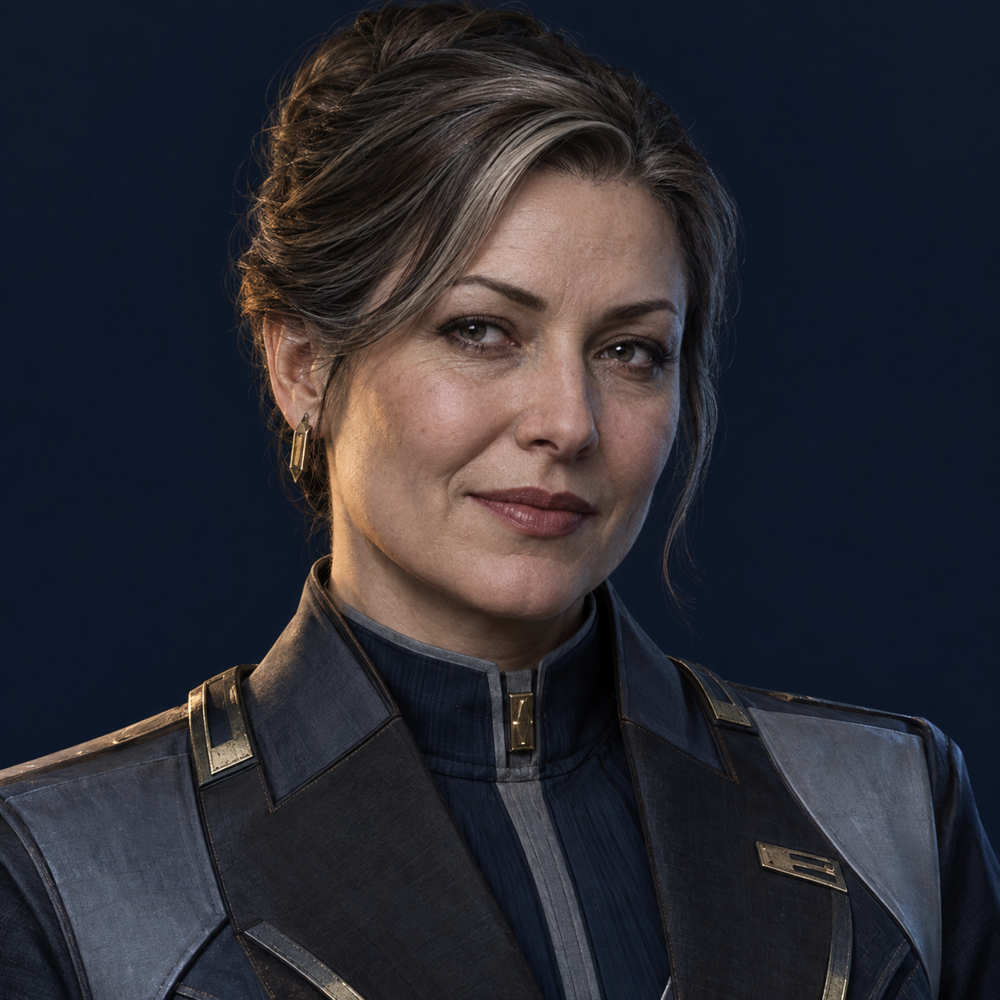
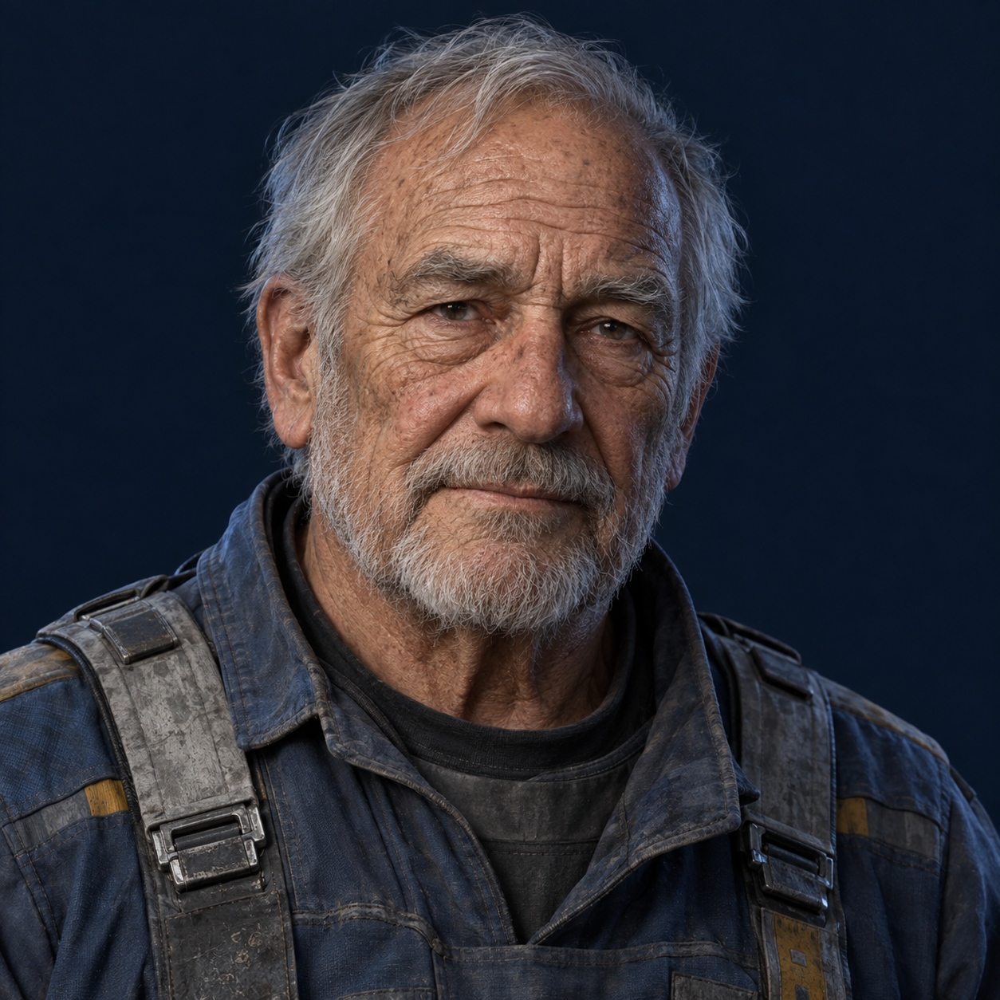
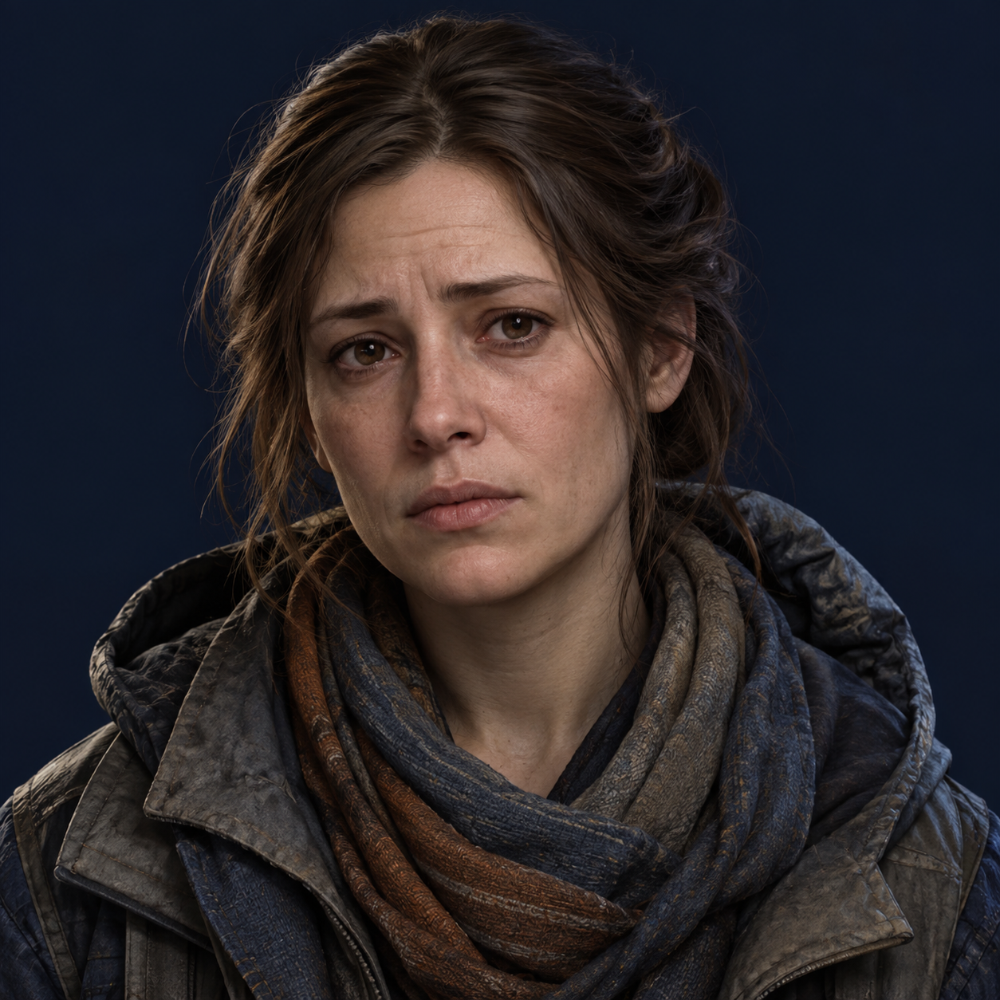
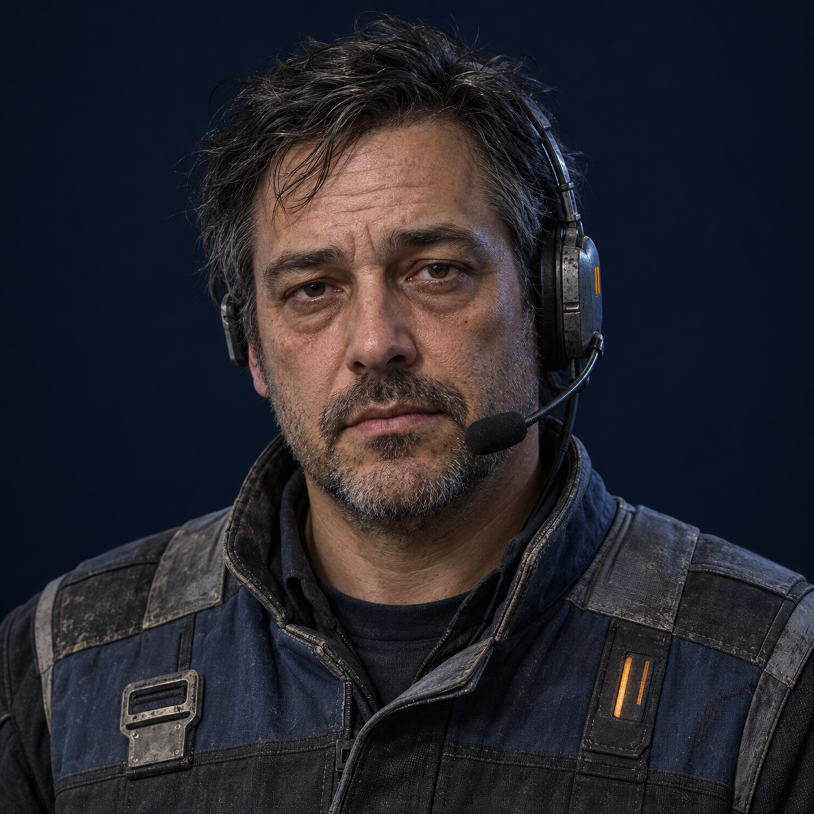
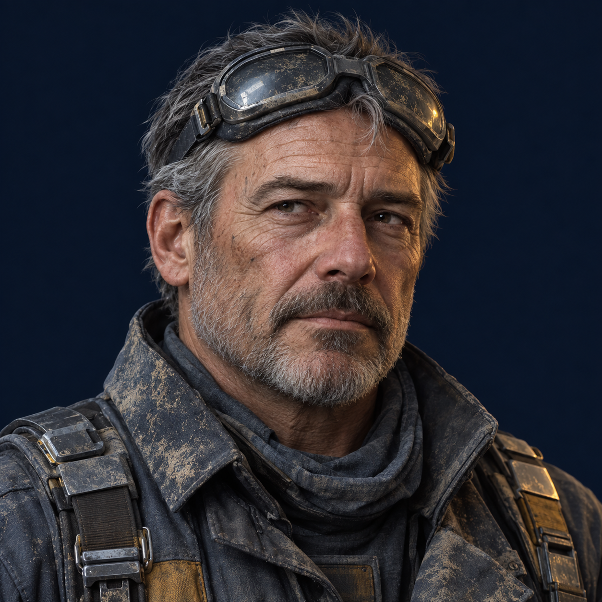
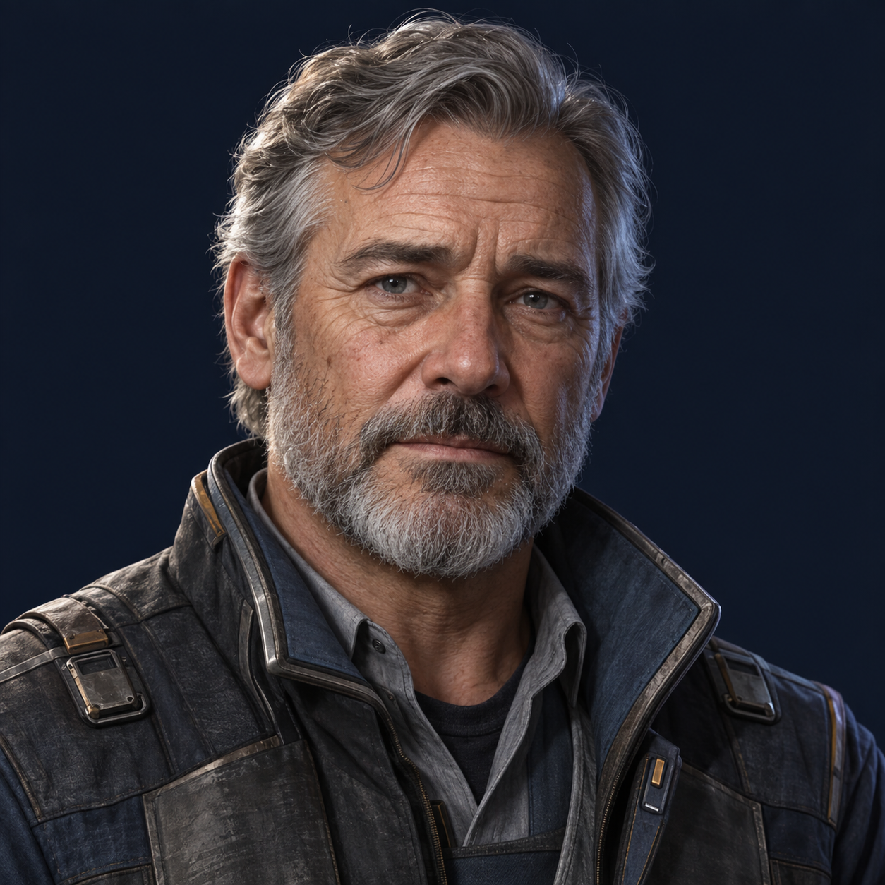
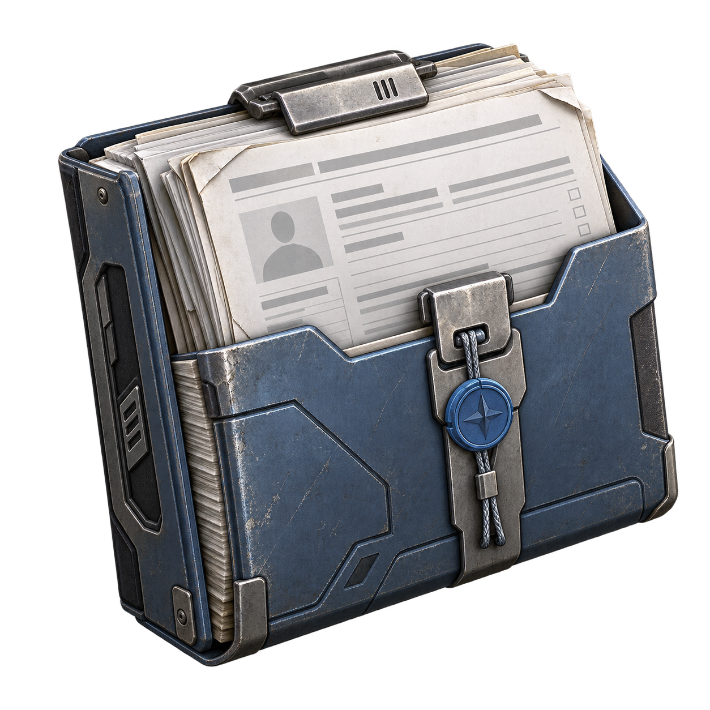
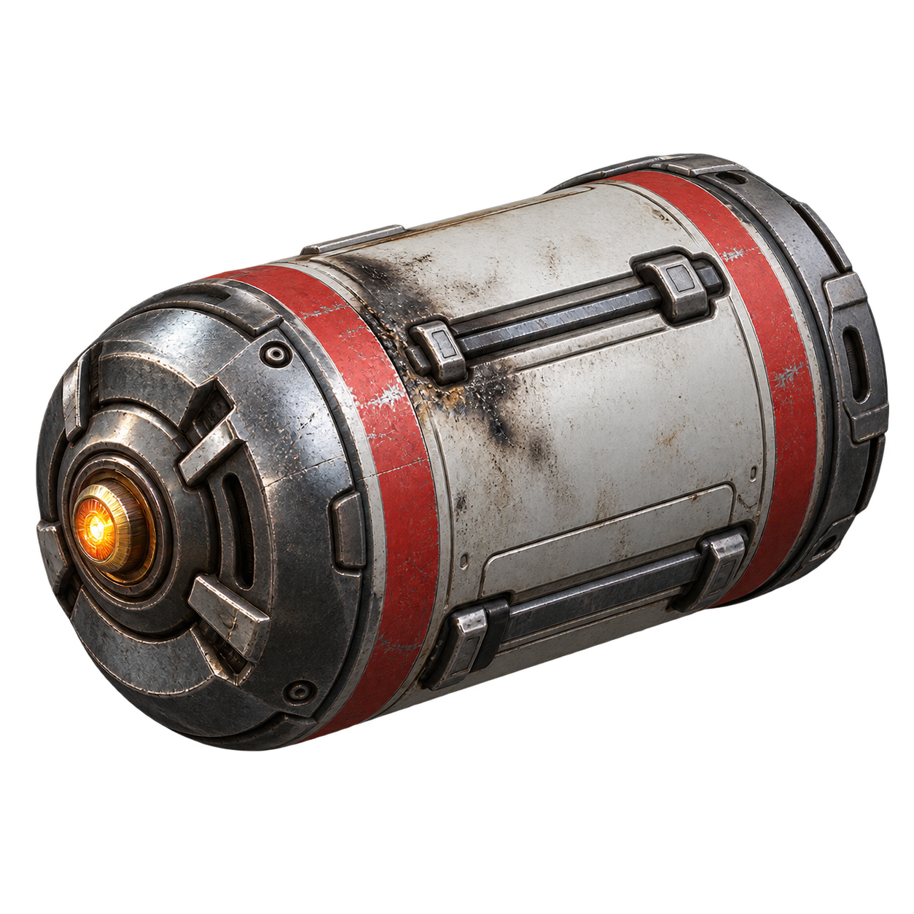
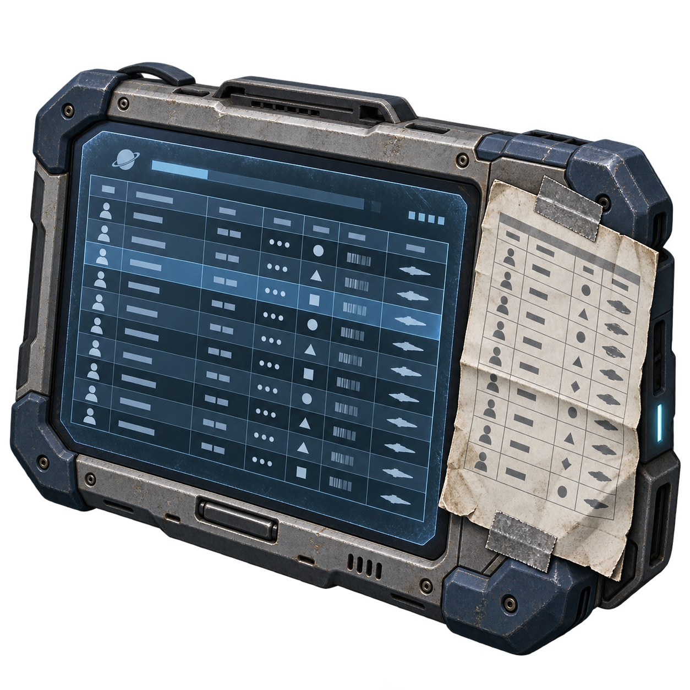

27 сентября 2026 · 6 портретов и 3 предмета. Исходники созданы встроенным image_gen. Ниже — просмотр при 256 px и в малом размере (лица 72 px, предметы 48 px). Клик открывает исходный PNG. Нарезка и подключение в игру — отдельный этап.
Фактические промпты · Проверка файлов · Статус поставки








